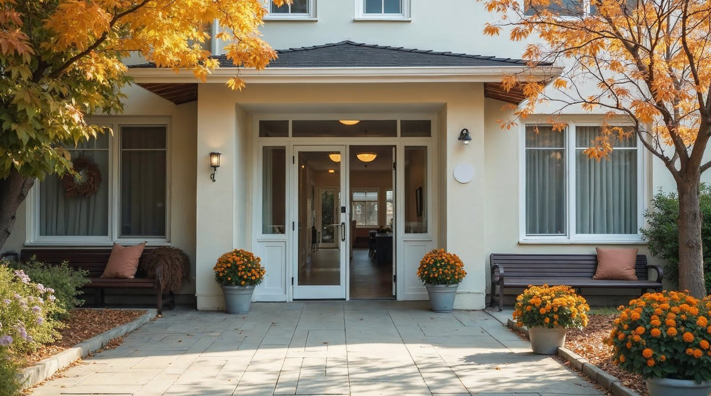
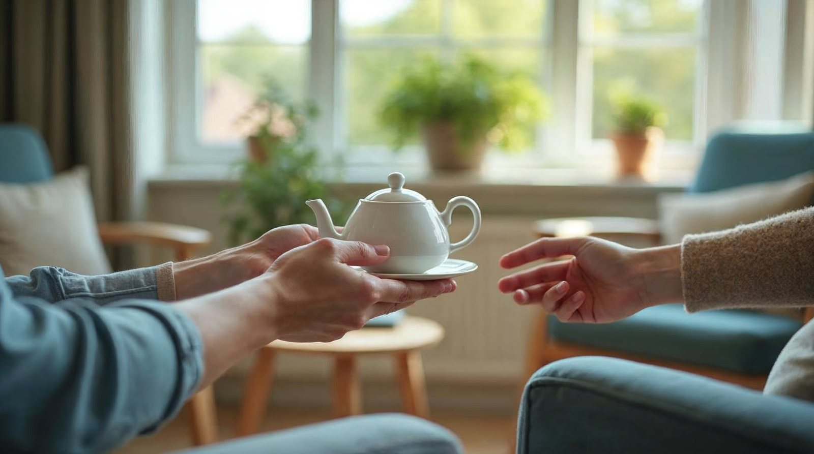

이종호 한의사 감수좋은꿈참사랑한의원 대표원장 (한의사 면허번호 19769)발행 2026-11-23 · 수정 2026-11-27
이 글의 차례
- 프로필에 기재된 내용
- 지정 한의사라는 말은 어떤 뜻인가요?
- 왜 구청 안내가 먼저인가요
- 이런 지역 사업은 보통 어떻게 알아보나요?
- 가족이 먼저 확인할 것
- 기억이 걱정될 때 집에서 먼저 살펴볼 것은요?
- 왜 잠과 식사, 걷기를 함께 보나요
- 어르신 진료는 이렇게 진행됩니다
- 사업 대상이 아니어도 진료를 받을 수 있나요?
- 어르신이 드시는 약은 어떻게 정리할까요?
- 어르신 혼자 오신다면 무엇을 챙기면 될까요?
- 상담 때 어르신이 편하시도록 이렇게 도와주세요
- 가족이 함께 해 볼 수 있는 하루 습관
- 어르신의 일주일을 이렇게 기록해 보세요
- 이렇게 기록해 오시면 상담이 쉬워집니다
- 어르신의 마음도 함께 살펴 주세요
- 겨울철 어르신 생활에서는 무엇을 챙기면 좋을까요?
- 스스로 점검해 보세요
- 예를 들면 이런 경우입니다
- 얼마나 지켜보고, 언제 상담하면 좋을까요?
- 이런 증상은 먼저 확인이 필요합니다
"구청에서 어르신 한방 사업을 한다던데, 우리 어머니도 받을 수 있어요?" 가족분들께 종종 듣는 질문이에요. 안내문을 받긴 했는데 어디에 물어야 할지 막막하셨던 거죠. 처음엔 다 그래요.
동작구 어르신 한방 사업이 궁금하시다면 올해 운영 여부와 대상, 신청 방법을 동작구청이나 가까운 보건소에 먼저 확인하시는 게 가장 정확해요. 좋은꿈참사랑한의원의 이종호 대표원장은 이 가운데 일부 사업의 지정 한의사로 프로필에 소개되어 있습니다.
그러니까 사실은 두 가지를 나눠서 보셔야 해요. '사업 대상이 되느냐'는 구청이 정하는 일이고, '어르신 몸을 어떻게 살피느냐'는 진료실에서 하는 일이에요. 두 개가 다른 얘기거든요. 그래서 이 글도 그 순서대로 정리해 두었습니다.
프로필에 기재된 내용
- 동작구 어르신 치매예방 사업 지정 한의사
- 동작구 찾아가는 실버한방케어 지정 한의사
이 정보는 한의원 프로필 카드 기준이며, 지정 연도와 사업 내용은 확인이 필요합니다.
지정 한의사라는 말은 어떤 뜻인가요?
지정 한의사는 구나 보건소가 운영하는 사업에 참여하는 한의사로 정해졌다는 뜻입니다. 사업의 대상과 내용, 방식은 구에서 정하고, 지정된 한의원은 그 안내에 맞춰 참여합니다.
지정 여부는 해마다 바뀔 수 있고, 지정되었다는 사실이 진료 결과를 약속하는 것도 아닙니다. 그래서 이 글에 적힌 내용은 한의원 프로필에 소개된 사실을 옮긴 것으로 보시고, 올해 사업에 참여하는지는 구청과 보건소, 한의원에 함께 확인해 주세요.

왜 구청 안내가 먼저인가요
지역 사업은 대상 연령, 거주지, 소득 요건, 신청 기간, 비용 부담 여부가 해마다 달라집니다. 한의원에서 안내할 수 있는 범위와 구청에서 정하는 범위가 달라, 대상이 되는지는 구청과 보건소 안내가 기준입니다.
이런 지역 사업은 보통 어떻게 알아보나요?
처음 알아볼 때는 어디에 물어야 할지부터 막막하기 쉽습니다. 아래 순서로 차근차근 확인해 보시면 헤매는 시간을 줄일 수 있습니다.
- 동작구청 홈페이지의 공지사항이나 보건 관련 안내에서 사업 이름으로 검색해 보기
- 가까운 보건소에 전화해 올해 운영하는 어르신 대상 한방 사업이 있는지 묻기
- 어르신이 사시는 동의 주민센터에 신청 창구가 어디인지 함께 물어보기
- 들은 내용은 통화한 날짜, 담당 부서, 신청 기간과 함께 메모해 두기
같은 사업이라도 해마다 이름이나 방식이 조금씩 바뀌기도 해서, 지난해 들은 내용과 다를 수 있습니다. 한 번 확인했더라도 신청하기 직전에 다시 한번 물어보시면 좋습니다. 여러 가족이 나눠 알아보신다면 들은 내용을 가족 단체 대화방 같은 한곳에 모아 두면 서로 다르게 이해하는 일을 줄일 수 있습니다.

가족이 먼저 확인할 것
- 동작구청 또는 가까운 보건소에 올해 사업이 운영되는지, 신청 방법이 무엇인지 문의하기
- 어르신의 주소지와 연령이 대상에 해당하는지 확인하기
- 지정 한의원이 어디인지 확인하기
- 신청에 필요한 서류가 무엇인지 함께 물어 두기
- 방문 진료나 외출 동행이 필요한지 가족끼리 미리 이야기 나누기
- 신청을 대신할 가족이 있다면 대리 신청이 가능한지, 위임에 필요한 것이 무엇인지 묻기
- 어르신께도 사업 내용을 쉽게 설명드리고 참여하실 마음이 있는지 여쭙기
기억이 걱정될 때 집에서 먼저 살펴볼 것은요?
나이가 들면 이름이 바로 떠오르지 않거나 물건 둔 곳을 잊는 일이 조금씩 늘어납니다. 이런 깜빡함은 나중에라도 기억이 나거나, 힌트를 주면 떠올리는 경우가 많습니다.
가족이 눈여겨볼 것은 그보다 생활 속 변화입니다. 같은 질문을 짧은 시간에 여러 번 하시는지, 늘 하시던 요리나 계산, 리모컨 사용 같은 익숙한 일을 어려워하시는지, 약을 거르거나 두 번 드시는 일이 생겼는지를 지켜봐 주세요.
기억이 흐려진 것처럼 보이게 하는 이유도 여럿 있습니다.
잠을 제대로 못 주무시거나, 귀가 어두워져 대화를 놓치시거나, 마음이 가라앉아 있거나, 새로 드시는 약이 있을 때도 깜빡함이 늘어 보일 수 있습니다(깜빡하는 일이 부쩍 늘어 경도인지장애나 치매가 걱정될 때는 무엇부터 살피나요?).
걱정이 크다면 보건소의 기억력 검사 안내를 받아 보시거나 신경과 진료를 함께 고려해 보세요. 한의원에서는 그와 별개로 잠과 식사, 활동 같은 생활 리듬을 함께 살핍니다.
왜 잠과 식사, 걷기를 함께 보나요
어르신의 하루는 잠과 식사, 걷기가 서로 맞물려 돌아갑니다. 낮에 거의 움직이지 않으시면 밤잠이 얕아지고, 밤잠이 얕으면 낮에 졸음이 늘어 다시 덜 움직이시게 되는 흐름이 생기기 쉽습니다.
입맛이 줄어 드시는 양이 적어지면 기운이 떨어지고, 기운이 없으면 바깥 외출을 꺼리게 됩니다. 한 번 넘어지신 뒤에는 또 넘어질까 걱정되어 걷는 양이 더 줄어드는 경우도 많습니다.
그래서 저는 어르신을 뵐 때 불편한 곳 한 가지만 보기보다, 하루를 어떻게 보내시는지를 함께 여쭙습니다. 그 가운데 가장 먼저 손댈 수 있는 한 가지를 가족과 함께 정하는 것이 출발점이 됩니다.
어르신 진료는 이렇게 진행됩니다
모든 분의 맥을 먼저 짚고, 보호자와 어르신의 이야기를 모두 들은 뒤 천천히 설명드리며 진행합니다. 필요하다고 판단될 때 설진 같은 방법을 더해 몸 상태를 살피고, 잠과 식사, 활동 같은 생활 리듬을 함께 이야기합니다. 기억과 관련된 진단과 치료를 약속하지 않으며, 걱정이 크면 신경과 같은 진료와 검사를 함께 권합니다.
사업 대상이 아니어도 진료를 받을 수 있나요?
네, 지역 사업과 한의원 진료는 별개입니다. 사업 대상이 아니시거나 올해 사업이 운영되지 않더라도, 어르신의 잠과 식사, 통증 같은 불편은 진료에서 함께 살필 수 있습니다. 비용은 진찰 뒤 진료 내용과 함께 안내드립니다.
어르신이 드시는 약은 어떻게 정리할까요?
어르신은 여러 병원에서 받은 약을 함께 드시는 경우가 많습니다. 집에 있는 약 봉투와 약통을 모두 한 봉지에 담아 오시거나, 봉투 앞면을 사진으로 찍어 오시면 가장 정확합니다(한의원 가기 전에 복용 약 목록은 어떻게 정리하면 좋나요?).
영양제와 건강식품, 가끔 드시는 진통제나 수면에 도움이 된다며 드시는 약도 함께 알려 주세요. 비슷한 약이 겹쳐 있지는 않은지 처방한 병원에 확인해 보시도록 말씀드리기도 합니다. 드시던 약은 처방한 의사와 상의 없이 줄이거나 끊지 마세요.
어르신 혼자 오신다면 무엇을 챙기면 될까요?
혼자 오시는 어르신이라면 드시는 약 목록과 불편한 곳을 적은 메모를 챙겨 오시면 좋습니다. 진료실에서 들은 내용을 잊으실까 걱정되시면 휴대전화 메모에 적어 가시거나, 헷갈리는 부분은 그 자리에서 다시 여쭤 보셔도 괜찮습니다(혼자 한의원에 오시는 어르신은 접수와 진료 때 무엇을 준비하면 되나요?).
상담 때 어르신이 편하시도록 이렇게 도와주세요
- 보청기나 돋보기를 쓰신다면 꼭 챙겨 오기
- 대답은 어르신이 먼저 하시도록 기다려 드리고, 빠진 부분만 보호자가 덧붙이기
- 어르신이 들으시기 불편한 이야기가 있다면 미리 메모로 전해 주기
- 진료 시간에 쫓기지 않도록 여유 있게 출발하기
- 걷기가 불편하시면 이동 방법을 미리 전화로 확인하기(거동이 불편한 부모님을 모시고 올 때는 무엇을 미리 확인하면 되나요?)
어르신이 처음 맥을 짚으실 때 무엇을 보는지 궁금하시다면 관련 글도 참고하세요(어르신이 처음 진맥을 받으실 때 무엇을 보고 어떤 것을 여쭙나요?). 저는 어르신께 설명을 드릴 때 한 번에 하나씩, 천천히 말씀드리려고 합니다.
가족이 함께 해 볼 수 있는 하루 습관
- 아침에 일어나는 시각을 일정하게 맞추고, 오전에 햇볕을 쬐며 짧게 걷기
- 하루 한 번은 어르신과 마주 앉아 그날 있었던 일을 이야기 나누기
- 화분 가꾸기, 손으로 하는 집안일처럼 손을 쓰는 일을 맡겨 드리기
- 물을 자주 드시도록 눈에 띄는 곳에 컵을 두기
- 밤에 화장실 가시는 길에 작은 등을 켜 두고, 미끄러운 깔개는 치우기
- 약을 요일별 칸이 있는 약통에 나눠 두어 거르거나 두 번 드시지 않게 하기
모든 것을 한꺼번에 바꾸기보다 한두 가지를 골라 2주쯤 이어 가 보시길 권합니다. 어르신이 즐거워하시는 일에서 시작하면 오래 이어 가기가 훨씬 쉽습니다. 가족이 함께 걷거나 같이 화분을 돌보면 어르신께는 그 시간 자체가 반가운 일이 됩니다.
어르신의 일주일을 이렇게 기록해 보세요
진료실에서 "요즘 어떠세요"라고 여쭈면 어르신은 대개 "괜찮다"고 하십니다. 그래서 곁에서 지켜본 가족의 기록이 큰 도움이 됩니다.
- 잠자리에 드신 시각과 깨신 시각, 낮잠을 주무신 시간
- 끼니마다 드신 양을 많이, 보통, 적게로 짧게 적기
- 산책이나 외출을 하셨는지, 얼마나 걸으셨는지
- 깜빡하신 일이 있었다면 구체적으로 무엇이었는지
- 기분이 가라앉아 보이거나 짜증이 늘었던 날
일주일만 적어도 평소와 달라진 날이 보이기 시작합니다. 이 기록을 진료 때 보여 주시면 어르신의 하루를 훨씬 자세히 이해할 수 있습니다. 공책 한 권이면 충분합니다. 어르신이 보시는 곳에 두면 직접 적으시기도 합니다.
이렇게 기록해 오시면 상담이 쉬워집니다
- 복용 중인 약 전체와 병원 진료 이력(약 목록 정리)
- 잠, 식욕, 대소변의 변화
- 기억이 달라졌다고 느끼기 시작한 때와 구체적인 사례
- 보호자 동반 여부, 걷기와 이동의 불편(부모님 모시고 오시는 법)
- 최근 넘어진 적이 있는지, 밤에 화장실 가는 횟수
- 하루 중 가장 기운이 없어 보이는 시간대
어르신의 마음도 함께 살펴 주세요
몸이 불편하다는 말씀 뒤에 외로움이나 가라앉은 마음이 숨어 있는 경우가 많습니다. 말수가 줄었는지, 좋아하시던 일에 흥미를 잃으셨는지, 사소한 일에 짜증이 늘었는지도 함께 지켜봐 주세요(어르신이 말수가 줄고 외로움과 우울이 길어질 때, 가족은 무엇을 살피면 좋을까요?).
이런 변화는 기억이 흐려진 것처럼 보이게 하기도 하고, 잠과 입맛을 함께 흔들기도 합니다. 자주 전화를 드리거나 함께 식사하는 시간을 늘리는 것만으로도 어르신의 하루가 달라지는 경우가 있습니다.
겨울철 어르신 생활에서는 무엇을 챙기면 좋을까요?
겨울에는 바깥 활동이 줄고, 난방비 걱정에 집을 서늘하게 지내시는 어르신도 많습니다. 실내가 너무 추우면 몸이 굳어 움직임이 줄고, 밤에 화장실 가시는 길에 넘어지기도 쉽습니다(난방비가 걱정돼 집을 서늘하게 지내는 어르신은 겨울에 몸을 어떻게 챙기나요?).
얇은 옷을 여러 겹 입으시고, 해가 드는 낮 시간에 짧게라도 창가나 바깥에서 햇볕을 쬐시도록 도와 드리세요. 겨울에는 목이 덜 말라 물을 적게 드시기 쉬우니 따뜻한 물을 자주 권해 드리는 것도 좋습니다.
스스로 점검해 보세요
가족이 보시기에 아래 가운데 해당하는 것이 있는지 살펴보세요.
- 같은 이야기나 질문을 하루에 여러 번 반복하신다
- 늘 하시던 요리나 계산, 전화 걸기를 어려워하신다
- 밤에 자주 깨시고 낮에 꾸벅꾸벅 조는 시간이 늘었다
- 드시는 양이 줄고 체중이 빠진 것 같다
- 바깥 외출을 꺼리고 누워 계시는 시간이 길어졌다
- 최근 넘어지셨거나 넘어질 뻔한 일이 있었다
여러 항목에 해당한다면 기록과 함께 진료 때 말씀해 주세요. 무엇부터 살필지 정하는 데 도움이 됩니다.
예를 들면 이런 경우입니다
- 예를 들어 겨울 들어 바깥 활동이 줄면서 낮잠이 길어지고 밤에 자주 깨신다는 어르신이라면, 낮 동안의 활동과 햇볕을 쬐는 시간, 저녁 식사 시각을 함께 여쭙니다.
- 예를 들어 혼자 사시는 부모님이 전화로는 늘 괜찮다고만 하신다는 자녀라면, 방문했을 때 냉장고에 남은 음식, 약통의 약 개수, 집 안의 정돈 상태를 함께 살펴보시도록 권합니다.
- 예를 들어 지역 사업 안내문을 받으셨는데 무슨 내용인지 잘 모르겠다고 하시는 어르신이라면, 안내문을 그대로 가지고 보건소나 주민센터에 함께 문의해 보시도록 권합니다.
- 예를 들어 손주를 돌보시느라 하루 종일 바쁘신데 밤에는 쉽게 잠들지 못하신다는 어르신이라면, 하루의 피로와 몸의 통증, 잠자리에 드는 시각을 함께 봅니다.
얼마나 지켜보고, 언제 상담하면 좋을까요?
어르신은 불편하셔도 "괜찮다, 나이 들면 다 그렇지" 하고 넘기시는 경우가 많아요. 맞는 말씀이기도 해요. 다만 그 '나이 들어 그런 것' 안에도 살펴 드리면 한결 편해질 수 있는 부분이 섞여 있거든요.
- 잠이나 입맛의 변화가 2~4주 넘게 이어지면 진료를 받아 보시길 권합니다.
- 깜빡하는 일이 몇 달 사이 눈에 띄게 늘었다면 보건소의 기억력 검사 안내나 신경과 진료를 함께 고려해 주세요.
- 넘어진 뒤 통증이 이어지거나 걷기를 꺼리게 되셨다면 기다리지 말고 진료를 받아 보세요(어르신이 넘어진 뒤 남은 통증과 또 넘어질까 하는 두려움은 어떻게 함께 살피나요?).
어르신 몸을 살피고 무엇부터 할지 정하는 건 제가 할게요. 대신 가족분들께 하나만 부탁드려요. 일주일 동안 어르신이 언제 주무시고 언제 일어나셨는지만 적어 와 주세요. 딴 건 하시던 대로 편하게 하셔도 돼요.
걷기도 세게 하실 필요 없어요. 약하게, 오래, 매일이에요. 햇볕 좋은 오전에 집 앞을 천천히 한 바퀴 도시는 것만으로도 충분한 시작이거든요.
부모님 몸이 예전 같지 않다고 느끼실 때 가족 마음이 더 무거울 수 있어요. 혼자 고민하시기보다 한 번 같이 이야기 나누시죠. 궁금한 건 그냥 편하게 물어보세요. 어르신의 하루를 차근차근 함께 살펴보겠습니다.
이런 증상은 먼저 확인이 필요합니다
- 최근 갑자기 길을 잃거나 가족을 못 알아보는 경우
- 한쪽 팔다리 힘 빠짐, 말이 어눌해짐(지체 없이 가까운 응급실)
이런 신호가 있으면 한의원보다 가까운 병원이나 응급실을 먼저 찾으세요.

먼저 확인이 필요한 신호
- 최근 갑자기 길을 잃거나 가족을 못 알아보는 경우
- 한쪽 팔다리 힘 빠짐, 말이 어눌해짐(지체 없이 가까운 응급실)
프로필에 기재된 내용
- 동작구 어르신 치매예방 사업 지정 한의사
- 동작구 찾아가는 실버한방케어 지정 한의사
지정 한의사라는 말은 어떤 뜻인가요?
- 지정 한의사는 구나 보건소가 운영하는 사업에 참여하는 한의사로 정해졌다는 뜻입니다.
- 사업의 대상과 내용, 방식은 구에서 정하고, 지정된 한의원은 그 안내에 맞춰 참여합…
왜 구청 안내가 먼저인가요
- 지역 사업은 대상 연령, 거주지, 소득 요건, 신청 기간, 비용 부담 여부가 해마다…
- 한의원에서 안내할 수 있는 범위와 구청에서 정하는 범위가 달라, 대상이 되는지는 구…
자주 묻는 질문
기억이 걱정될 때 한의원에서는 무엇을 하나요?
생활 리듬, 수면, 활동, 식사를 함께 이야기하며 살핍니다. 진단과 치료를 약속하지 않으며 걱정이 크면 신경과 같은 진료와 검사를 권합니다.
방문 진료가 가능한가요?
사업 운영 여부와 방식은 해마다 달라 한의원과 구청에 함께 확인해 주세요.
어르신 혼자 오셔도 되나요?
가능하지만 복용 약과 평소 모습을 잘 아는 보호자와 함께 오시면 상담이 훨씬 수월합니다.
지정 한의원이 바뀌기도 하나요?
지역 사업은 해마다 지정 기관이 달라질 수 있어, 신청 전에 구청과 보건소에서 확인하는 것이 정확합니다.
좋은꿈참사랑한의원은 재진 때 지난번 이야기부터 이어서 여쭙니다. 진료시간과 예약은 오시는 길에서 확인하세요.
어디서 상담받을 수 있나요?
좋은꿈참사랑한의원은 서울 동작구 만양로2길 2 신성빌딩 3층·5층(서울 동작구 상도동, 7호선 상도역 3번 출구 근처)에 있습니다. 한의사 3명(이종호 대표원장, 조영기 수석진료원장, 정원영 진료원장)이 진료합니다. 진료시간은 평일 09:30~20:00(점심 13:00~14:00), 토·일·공휴일 09:30~15:00이며, 방문 전 전화로 확인을 권합니다. 예약은 네이버 예약, 카카오톡 상담, 전화 02-815-7510로 받습니다.
이 글은 일반적인 건강 정보이며 개인의 진단이나 치료를 대신하지 않습니다. 증상이 있거나 복용 중인 약이 있다면 진료를 통해 확인하세요. 치료 효과는 개인마다 다를 수 있습니다.
작성 기준: 일반적으로 알려져 있는 건강 정보를 참고해 정리했습니다(대표원장 감수). 증상 기록은 1~2주 동안 하루 1회, 비슷한 시간에 적어 오시면 지난 상태와 비교하기 쉽습니다.